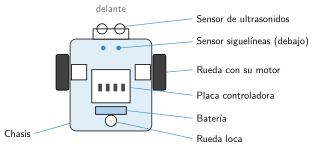

Montamos el robot
🤔 Pienso5 min
Qué hago aquí: Piensa un momento y contesta con lo que ya sabes. No pasa nada si no lo sabes: es para empezar.
Abre la caja y marca lo que encuentres. Si falta algo, avisa.
📖 Leo y aprendo10 min
Qué hago aquí: Lee despacio, mira los dibujos y los ejemplos, y quédate con la idea clave del final.
Casi todos los robots de clase tienen las mismas piezas.

En clase usamos dos robots:
| mBot | Nezha | |
|---|---|---|
| Placa | mCore | Micro:Bit con placa Nezha |
| Se programa con | mBlock (bloques) | MakeCode (bloques) |
| Puertos | Numerados: 1, 2, 3, 4 | Motores M1, M2… y sensores J1, J2… |
Cada pieza va en un puerto. Apunta cuál: el programa lo necesita.
Normas: guarda los tornillos en la tapa, no fuerces las piezas y apaga el robot antes de tocar los cables.
✏️ Hago30 min
Qué hago aquí: Haz las actividades en orden. Empieza siempre por las básicas.
Monta tu robot con las instrucciones. Después, completa la tabla.
| Pieza | Puerto |
|---|---|
| Motor izquierdo | |
| Motor derecho | |
| Sensor de ultrasonidos | |
| Sensor siguelíneas |
Une cada pieza con lo que hace.
| Rueda loca • | • Ejecuta el programa |
| Placa • | • Mide la distancia |
| Ultrasonidos • | • Mantiene el equilibrio |
Clasifica las piezas de tu robot.
| Entrada (sensores) | Controlador | Salida (actuadores) |
|---|---|---|
¿Para qué sirve la reductora? ¿Qué pasaría sin ella?
✏️ Puedes responder escribiendo, con un dibujo o un esquema, o contándolo en voz alta.
🚀 Amplío (si quieres saber más)
Qué hago aquí: ¿Has terminado? Lee la curiosidad o elige el reto. Es voluntario.
El robot no tiene volante. ¿Cómo crees que gira? Haz un dibujo.
✅ Compruebo5 min
Qué hago aquí: Contesta sin mirar la ficha y marca cómo lo llevas.